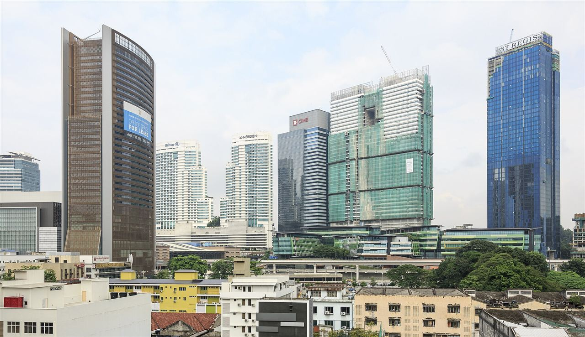
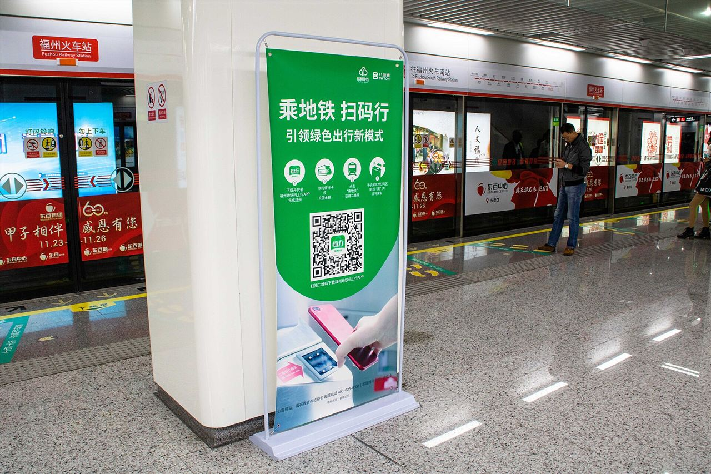
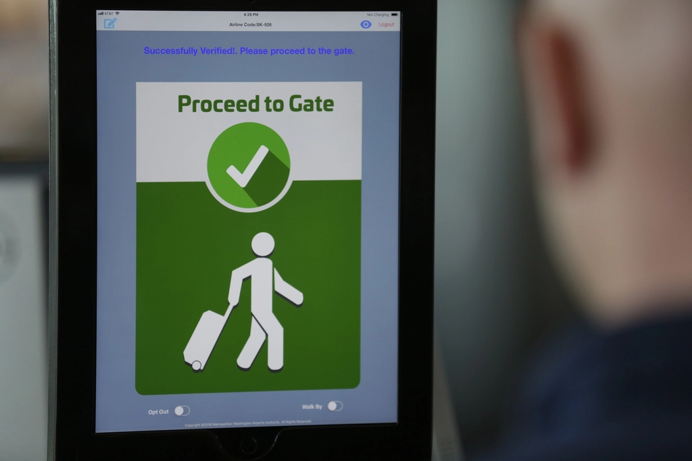
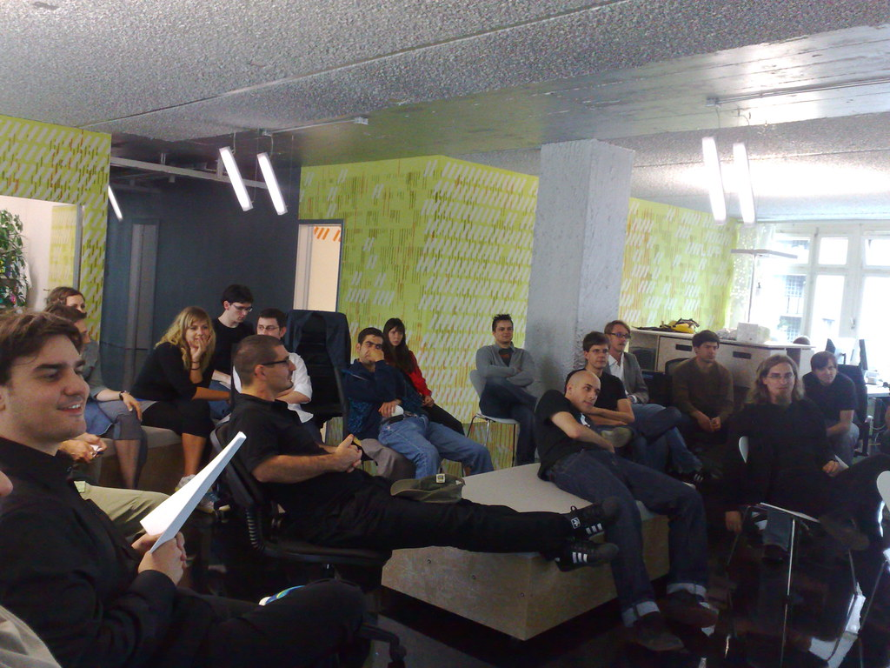

Most Malaysian fintech builds do not fail at the design review. They fail when DuitNow QR works in the demo but not on a crowded merchant's phone at lunchtime, when MyKad verification silently rejects a slice of real applicants, or when the reporting fields the regulator asks for turn out never to have been in scope.
Choosing a Malaysia Open Finance API developer India has to offer is the easy half of the problem. The other half is knowing which parts of the build are regulated work and which are ordinary engineering. Viantha Solutions builds both, from our engineering office in Trichy, Tamil Nadu, with our headquarters in Singapore. This guide covers BNM's direction, the payment rail, identity checks, and how offshore delivery works from this side.
For a digital banking Malaysia 2026 roadmap, that means BNM's eKYC policy, DuitNow settlement and the reporting fields are settled in week one instead of being discovered in week six.

Key Takeaways
- BNM has been steering the market toward open finance. Consent, data-sharing and reporting shape the API design before any endpoint is written.
- DuitNow is the national real-time rail: payee references through DuitNow ID, DuitNow QR, name enquiry, retries and settlement with PayNet.
- eKYC runs on MyKad. Build the failure states and the manual review queue first, then the happy path.
- Islamic structures and digital bank volumes are growing together. Start with a paid pilot on Spring Boot, React and AWS.
In This Guide
Where BNM Is Taking Open Finance
Bank Negara Malaysia regulates banks, insurers and payment operators, and it has spent the last few years moving the conversation from open banking toward broader open finance: consent-based sharing of customer data across financial products, with portability as the stated direction in its policy documents. Nobody has to guess about the principles. The judgement calls sit in the implementation, because each institution reads the timelines and the data categories a little differently.
For a BNM Open Banking API integration, that means the design work starts with consent capture, scope definitions, revocation handling and an audit trail, before a single account-balance endpoint exists. Sandbox access requests take longer than anyone plans for, so we raise them early and build against contract stubs until credentials arrive. Teams that treat regulatory paperwork as week-three work lose a month they never budgeted for.
DuitNow: The Rail Your Product Is Judged On
DuitNow is how the country moves money in real time, operated by PayNet. Payees are addressed by reference: a mobile number, an NRIC, a business registration number, or an account number routed through the National Addressing Database. On the merchant side, DuitNow QR is the common presentment standard, and consumers have firm habits about scanning, expiry windows and amount confirmation. For a DuitNow API integration developer India based team, that addressing model is the first thing to get right.
The engineering is in the edges. A name enquiry has to happen before the transfer is confirmed and its result has to be shown clearly. Callbacks arrive out of order, QR orders expire mid-payment, and settlement files land after the customer has already been told the payment succeeded. Reconciliation jobs have to explain every mismatch by name rather than by count. That last habit separates a payments team that scales from one that spends Fridays in spreadsheets.

MyKad, eKYC and the States That Matter
As a MyKad eKYC API integration developer, we spend more time on failure paths than on the happy path. The flow looks simple: capture the MyKad, read the NRIC, run liveness, match the face, done. In production there are blurred photos, expired cards, names that differ between the card and the bank record, and applicants in poor lighting who try three times and give up. BNM's eKYC policy expectations also require you to keep evidence of how each decision was reached.
So the states get designed before the states get coded: pending, expired, mismatched, escalated to manual review, approved with conditions. Each one needs an owner in your operations queue and a record in the audit log. Build it that way and onboarding conversion becomes a number you can improve instead of a mystery you argue about.

Digital Banks and What They Are Still Buying
Malaysia issued a small number of digital banking licences, and the GXBank API developer India work people ask for usually means integrating with one of them: GXBank, AEON Bank and KAF Investment Bank are all licensed under BNM's framework and have moved from pilot to real volumes. They onboard users entirely through the app, price credit instantly, and depend on integrations for identity, payments and bureau data. Their engineering teams are lean, which is precisely why integration work gets outsourced.
As a Malaysian digital bank API developer India based team, most requests we see are onboarding pipelines, credit decisioning hooks, disbursement through DuitNow, and statement or transaction enrichment. Our API integration work follows the same pattern: clear contracts, idempotent handlers, and documentation an internal team can take over later. If you would rather read what the systems do than what we claim, our banking technology page covers that ground.

Islamic Fintech Structures
Malaysia has a significant Islamic fintech sector, and it is not a labelling exercise. Financing runs on structures such as Tawarruq and diminishing profit-rate arrangements, where the API returns a profit rate, a schedule and disclosure fields rather than a plain interest figure. Get those from the product engine, expose them as structured data, and never let a frontend recompute them.
This is where a Malaysia Islamic fintech API developer has to understand both the contract structure and the arithmetic behind it. Errors here are visible to customers immediately, and they are embarrassing in a market where the standards are mature and well documented.
Malaysia as an ASEAN Gateway
Foreign fintechs treat Malaysia as the way into ASEAN: English contracts, a familiar common law framework, and a market that tests a product properly before it is carried to neighbours. That is also why the region attracts an ASEAN fintech API developer India teams can reach in a single working day. Kuala Lumpur and Penang hold a large Indian engineering community, and several foreign banks already run regional technology centres there.
Honest observation: most foreign vendors enter through a KL partner or an existing regional client, and the ones who try to sell remote-only spend two quarters learning why that did not work. Among Indian IT company Malaysia projects, the ones that hold up are the small teams already used to working inside someone else's compliance process, not the ones arriving with a fixed blueprint. Related work of this kind sits inside our services portfolio.
How the Engagement Actually Runs
The stack is Spring Boot for services, React for customer and operations frontends, and AWS for hosting, queues and monitoring. Engineers work from Trichy in Tamil Nadu. Malaysia runs two and a half hours ahead of us, so a day that starts at 10:30 in Trichy opens at 1:00 pm in Kuala Lumpur, and we shift earlier starts on request so KL mornings are not dead time.
Work opens with technical discovery, then a paid pilot covering one integration delivered to your repository, then a dedicated team with a weekly demo instead of status emails. If you would rather skip the process and show us the system, send us the scope and an engineer replies the same working day.
FAQs Clients Ask Us
Are you a BNM Open Finance API developer from India for Malaysian fintechs?
Yes. Viantha Solutions works as a BNM Open Finance API developer from India for Malaysian fintechs, covering open finance data APIs, DuitNow ID and QR payment flows, MyKad eKYC onboarding, and core-facing services. The engineering office is in Trichy, Tamil Nadu, the headquarters in Singapore, and Malaysia sits two and a half hours ahead, so the working afternoons overlap.
What does a DuitNow integration include?
DuitNow ID transfers using a payee reference such as a mobile number or NRIC, DuitNow QR presentment and generation, name enquiry before the transfer is confirmed, plus retries, callback handling and settlement reconciliation with PayNet. The name enquiry step and QR expiry rules are where most first builds go wrong.
How do you handle MyKad eKYC failures?
Document capture and OCR, NRIC checksum validation, liveness checks and face match, then deliberate handling of the states that real users hit: blurred photos, expired cards, mismatched names and manual review. We build the audit trail and the fallback queue first, because happy-path-only eKYC looks fine in the demo and leaks applicants in production.
Talk to an Engineer, Not a Sales Rep
Describe the integration you need and the system it has to fit into. we will tell you honestly what it takes and whether we are the right team for it.
Start a Conversation Explore Services